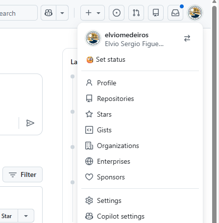
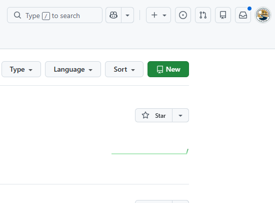
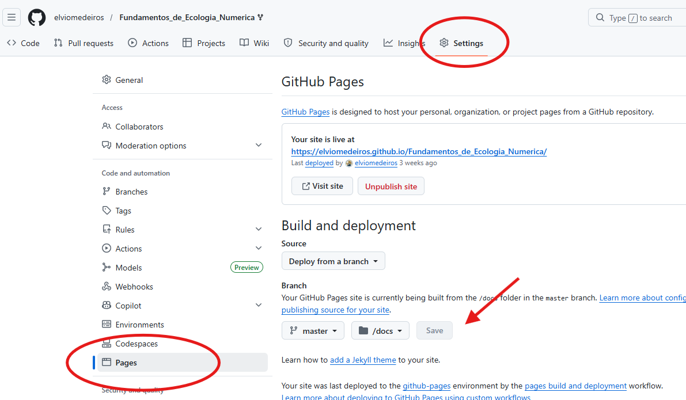
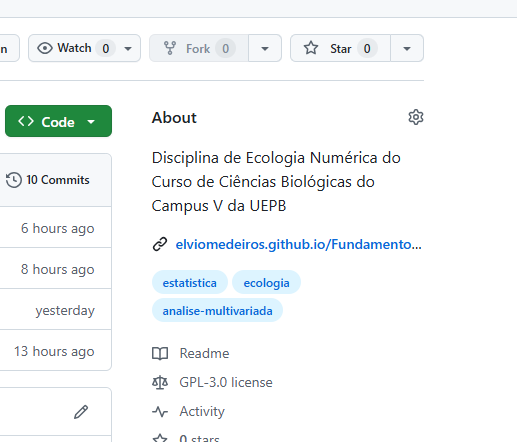

2 Ferramentas
RESUMO
Ferramentas como Git (software de controle de versões), GitHub (plataforma online que hospeda respositórios Git) e Zotero (software de gerenciamento e compartilhamento de referências bibliográficas) desempenham um papel central na ciência aberta, especialmente no que diz respeito à reprodutibilidade e à replicabilidade dos estudos. Essas plataformas contribuem diretamente para a transparência do processo científico ao permitir que dados, códigos, metodologias e referências sejam organizados, documentados e compartilhados de forma acessível (SILVEIRA et al., 2023). Outra ferramenta que usaremos é o Ambiente de Desenvolvimento Integrado (IDE) para a linguagem R, o RStudio (R STUDIO TEAM, 2022). Uma introdução detalhada sobre o R (R DEVELOPMENT CORE TEAM, 2017) e RStudio é apresentada no próximo capítulo Introdução ao R/RStudio.
| Dimensão | Significado | Exemplo |
|---|---|---|
| Publicações abertas | Tornar artigos científicos acessíveis sem barreiras de assinatura | Revistas de acesso aberto, repositórios institucionais |
| Dados abertos | Compartilhar bases de dados para reutilização e validação | Repositórios de dados, FAIR data principles |
| Software aberto | Disponibilizar código e ferramentas de forma livre | GitHub, pacotes R/Python open source |
| Infraestruturas abertas | Plataformas e serviços que suportam práticas abertas | Repositórios institucionais, plataformas colaborativas |
| Avaliação aberta | Transparência nos processos de revisão por pares | Peer review aberto, comentários públicos |
| Engajamento público | Participação da sociedade na produção científica | Ciência cidadã, projetos colaborativos |
| Educação aberta | Recursos educacionais livres e acessíveis | MOOCs, materiais didáticos abertos |
| Políticas e governança | Normas e diretrizes que incentivam a abertura | Planos de dados abertos, mandatos de agências de fomento |
No caso do Git e do GitHub, sua principal contribuição está no controle de versão e na rastreabilidade das alterações em projetos de pesquisa. Cada modificação em scripts, conjuntos de dados ou documentos pode ser registrada com precisão, incluindo informações sobre quem realizou a alteração, quando e por quê. Isso cria um histórico auditável que permite a outros pesquisadores compreenderem todas as etapas do desenvolvimento de um estudo. Como resultado, torna-se mais viável reproduzir os resultados originais utilizando os mesmos métodos e procedimentos, o que é essencial para validar descobertas científicas. Além disso, o uso dessas ferramentas facilita a colaboração entre pesquisadores, mesmo em contextos distribuídos geograficamente. Projetos podem ser desenvolvidos coletivamente, com contribuições revisadas e integradas de forma estruturada. Isso reduz inconsistências e melhora a qualidade geral da pesquisa.
O Zotero atua na organização e gestão de referências bibliográficas, assegurando que as fontes utilizadas sejam corretamente registradas e facilmente recuperáveis. Ele também permite o compartilhamento de bibliotecas entre grupos de pesquisa, promovendo alinhamento teórico e metodológico. Ao tornar explícitas as bases conceituais de um estudo, o Zotero contribui para que outros pesquisadores possam compreender, verificar e replicar os fundamentos da pesquisa.
Em conjunto, essas ferramentas fortalecem práticas científicas mais abertas, confiáveis e verificáveis, pilares fundamentais da ciência aberta.
2.1 Instalação do R e RStudio
2.1.1 R base
- O primeiro passo é entrar na página do projeto CRAN (Comprehensive R Archive Network) (https://www.r-project.org/).
- Do lado esquerdo da página clique sobre o link CRAN abaixo de Download. 3. Uma nova página com uma série de links irá se abrir. Esses links são chamados de “espelhos” e servem para que você possa escolher o local mais próximo de onde você está para fazer o download do programa. Escolha um espelho no Brasil.
- Na seção Download and Install R, clique sobre o link
Download R for Windowspara baixar a versão para esse sistema… (MacOS??… o que é isso?) - Clique sobre o link
base. - Clique sobre o link
Download R 4.x.x for Windowspara fazer o download do arquivo R.exe. - A instalação segue o formato padrão de instalação de programas no Windows, e portanto não são necessários maiores detalhes.
2.1.2 RStudio
- Para baixar o RStudio entre no endereço (https://posit.co/download/rstudio-desktop/)
- Clique no link
Products > RStudio - Selecione a versão Desktop.
- Clique em
DOWNLOAD RSTUDIO DESKTOP - Será exibida uma página com a recomendação para você baixar o RStudio FREE versão mais recente - Windows
- Clicando nesse link, você irá baixar o arquivo RStudio atual (.exe)
- Depois é só clicar e instalar da forma convencional do Windows.
Após a instalação, você pode abrir o RStudio pelo seu respectivo ícone, e o RStudio estará pronto para ser utilizado. O R base continuará instalado mas será acessado pelo RStudio. Não o desinstale.
2.1.3 RStudio na nuvem
Usar o RStudio Cloud (https://login.rstudio.cloud/) é uma opção para quem não quer instalar a versão para PC. O RStudio Cloud é uma plataforma online que fornece um ambiente de desenvolvimento integrado para o R, permitindo que os usuários executem análises, desenvolvam código e colaborem com outras pessoas, sem a necessidade de instalar o R e o RStudio em seus próprios computadores. É uma solução conveniente e acessível, especialmente para iniciantes ou usuários que desejam compartilhar projetos e colaborar de forma eficiente.
2.2 Criando uma conta no GitHub
Primeiro instale o Git a partir desse site https://git-scm.com/. O Git fará a ponte entre o Github e o RStudio.
Acesse o site oficial do GitHub em https://github.com/ e faça o cadastro. Você vai precisar confirmar por e-mail. Anote seu
e-mailelogin de cadastro.
2.2.1 Criando um repositório no Github
Faça login no GitHub
No canto superior direito, navegue até o seu perfil (
Profile): https://github.com/seu_nome

- Selecione
Repository > New

-
Preencha os campos:
● Repository name: nome_do_projeto
● Description (opcional)
● Public (público)
● Marque
Add a README● Escolha uma licença (GNU)
● Clique em
Create repository -
Abra o repositório criado, em
Settings, vá emPages● Na opção
Branch, escolha as opçõesmaine/docs.● Clique em
Save

-
Volte no repositório e escolha
About(símbolo da engrenagem)● Dê uma descrição do repositório
● Marque a opção
Use your GitHub Pages website● Insira dois ou três tópicos
●
Save changes

2.2.2 Criando um Controle de Versões no RStudio
No RStudio siga as seguintes opções:
File > New Project > Version Control > Git
Para incluir a opção Repository URL você precisará voltar no seu repositório do Github:
- Volte no seu repositório do Github e clique em
Code - Copie o
HTTPS - Volte no RStudio e cole em
Repository URL - O
Project directory nameé preenchido automaticamente com o nome do seu projeto - Em
Create project as subdirectory ofescolha a pasta local onde será mantido seu projeto. - Marque a opção
Open in new session - Clique em
Create Project
Após esse passos o RStudio abrirá uma nova sessão com seu projeto. Esse projeto estará vinculado ao Git e Github. O RStudio vai criar uma subpasta com o seu projeto (nome do repositório) na pasta que você definir em Project directory name.
2.2.3 Ativação do Git no RStudio
Para ativar Git no RStudio, abra o RStudio, vá em Tools > Global Options > Git/SVN e marque Enable version control interface
2.2.4 Configurando usuário e e-mail do Git, no RStudio
Instale o pacote usethis:
install.packages("usethis")Depois configure:
usethis::use_git_config(
user.name = "github_login",
user.email = "seu_email_cadastrado"
)
usethis::git_sitrep()Também é possível configurar pelo Terminal do RStudio:
git config --global user.name "Github_login"
git config --global user.email "email@exemplo.com"
2.3 Fluxo básico: Stage, Commit e Push
Depois que você cria o seu projeto no RStudio, ele cria novos arquivos (por exemplo, o arquivo do projeto, .Rproj, entre outros). O seu RStudio fica diferente do seu repositório do Github. Esses arquivos existem apenas no computador local e ainda não estão no GitHub. É necessário levar essas mudanças para o Github.
NOTA
Se você não consegue ver a extensão dos seus arquivos (exemplo, arquivo.Rproj) veja o tópico Visualizar extenções de arquivos do Capítulo Introdução ao R/RStudio
Para enviar as alterações ao GitHub:
Depois de alterar qualquer arquivo do seu projeto, vá até a aba Git no canto superior direito do RStudio. Ali aparecerão todos os arquivos modificados. Marque aqueles que deseja enviar para o GitHub — esse passo corresponde ao Stage dos arquivos, ou seja, selecionar os arquivos que farão parte do próximo Commit. Em seguida, clique em Commit.
Isso abrirá uma janela para você escrever a mensagem do commit. Escreva uma mensagem descrevendo as alterações realizadas (por exemplo, “primeiro commit”)
Depois de escrever a mensagem, clique novamente em Commit. Nesse momento, as alterações ficam registradas localmente no seu computador (na pasta do seu projeto do RStudio). Finalizado o commit, clique em Push para enviar tudo ao repositório remoto no GitHub.
Depois disso, abra o repositório no GitHub pelo navegador e atualize a página para conferir se os arquivos e alterações realmente foram enviados. Se o processo ocorreu corretamente, os arquivos atualizados e a nova mensagem de commit já aparecerão no histórico do repositório.
2.4 Modelo de site
Agora baixe esse arquivo _quarto.ZIP e descompacte-o. Nele há um conjunto de arquivos que cria um site provisório, a partir de onde você construirá seu relatório da disciplina.
Copie todos os arquivos da pasta descompactada para dentro da pasta do seu projeto no RStudio.
Atualize seu repositório do Github, com as opções Stage, Commit e Push, como descrito anteriormente. Na mensagem de commit escreva “site provisório”.